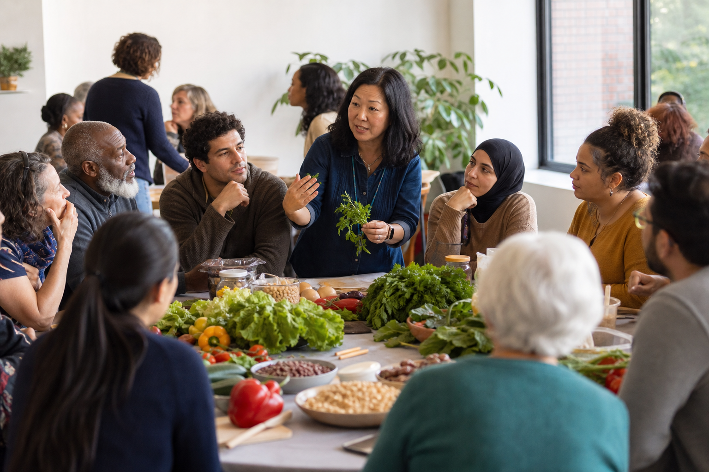
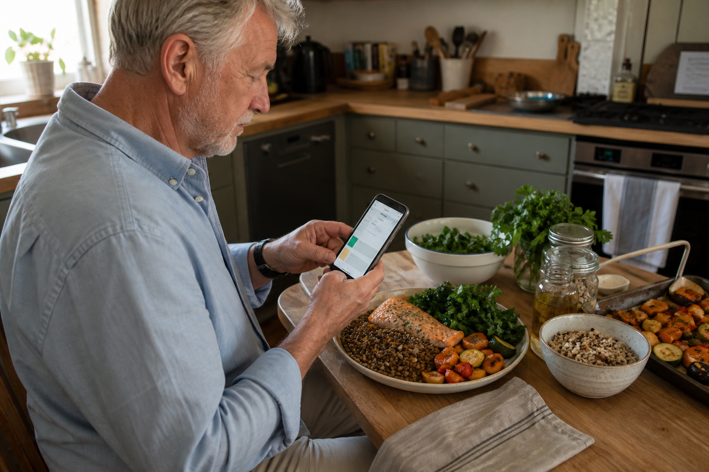

Eligibility lives in one system
Clinical need, food insecurity, benefits, preferences, and household realities are rarely available together when a program must act.
HealthLink360 connects nutrition benefits, clinical goals, community partners, and everyday follow-through, so health systems and payers can see what reached the patient, what changed, and what got in the way.
Food as Medicine programs often span clinics, payers, community organizations, retailers, delivery partners, and patients. Each can do its part while the full story still disappears between systems.
Clinical need, food insecurity, benefits, preferences, and household realities are rarely available together when a program must act.
A referral can be sent without confirming that food was selected, delivered, usable, culturally appropriate, or sustained.
Programs count referrals and boxes. Leaders need a defensible link between access, engagement, barriers, clinical change, and utilization.

Representative brand imageOver the past several months, HealthLink360 has worked with offices in D.C. government to bring Food as Medicine into real conversation. Chat & Chews create a welcoming space where people can ask questions, share what already works, and make healthier eating feel practical rather than prescriptive.
Explore how ingredients from a home garden or neighborhood grocery store can support more health-conscious meals.
Discuss satisfying ways to reduce excess calories without framing food around shame or restriction.
Translate the nutritional properties of everyday foods into realistic choices people can use at home.
Listen directly to the preferences, barriers, questions, and cultural context that shape how people actually eat.
HealthLink360 does not replace food providers or clinical systems. It coordinates the handoffs and returns a shared, patient-authorized record of action.
Combine clinical criteria, food access, preferences, and program eligibility.
Route each person to the right meal, produce, pantry, benefit, or education partner.
Turn the plan into clear next steps through trusted people and channels.
Capture redemption, delivery, use, barriers, and patient-reported experience.
Send concise evidence back to care teams, program leaders, and payers.
The same evidence layer can support a focused pilot or a portfolio of nutrition services without flattening them into one generic workflow.
Coordinate clinical eligibility, dietitian guidance, delivery, adherence barriers, and transitions for people with complex diet-sensitive conditions.
Connect prescriptions to redemption and everyday use while making affordability, transportation, retail access, and preference visible.
Link screening, enrollment, food pickup, SNAP or WIC navigation, education, and clinical follow-up across community partners.
Research supports better food access and engagement, while clinical and cost outcomes vary by intervention, population, and study design. HealthLink360 helps programs measure what actually happened instead of assuming a referral caused an outcome.
A Community Guide systematic review found fruit and vegetable incentive programs generally improved food insecurity and fruit and vegetable consumption among lower-income populations.
Read the reviewA multisite produce prescription evaluation reported improvements in diet, food security, and several cardiometabolic measures, though it used a pre-post design without a randomized control.
Read the evaluationA randomized intensive Food as Medicine trial improved preventive care engagement but did not improve glycemic control versus usual care, reinforcing the need for rigorous measurement.
Read the trialEvidence summaries are educational, not guarantees of clinical outcomes, utilization changes, or savings. Program eligibility, coverage, and reimbursement vary by payer, state, population, and authority.

Inside HealthLink360, meal planning can bring together the information a person chooses to share about their health, goals, routines, preferences, access, and available ingredients. The result is not a generic menu. It is practical guidance that can adapt as the person and their circumstances change.
Bring one program, one population, and one hard-to-prove handoff. We will map how HealthLink360 can connect the pathway without replacing the partners already doing the work.
Explore a Food as Medicine partnership